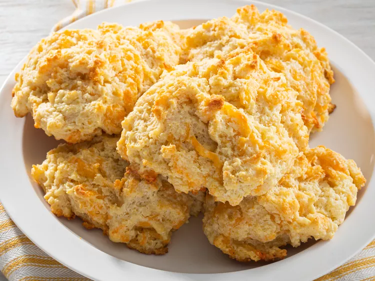

Cheddar Biscuits

Description
Make Red Lobster's delicious cheddar biscuits for yourself using this copycat recipe.
Ingredients
- All-Purpose Flour
- A Cup of Shredded Cheddar
- Milk
- Egg
- Butter
- Baking Powder
- Salt
- Garlic Powder
- Parsley
Steps
- In one bowl, combine the dry ingredients.
- In another bowl, combine the wet ingredients.
- Add the dry ingredients to the wet ingredients and lightly mix.
Note: The mixture is meant to be chunky so be careful not to overmix.
- Drop the dough onto a baking sheet and bake for 10 minutes.
- Melt the butter and stir in garlic powder and parsley.
- Brush the butter topping onto each biscuit.
- Bake for another 5 minutes, until the biscuits are golden brown.